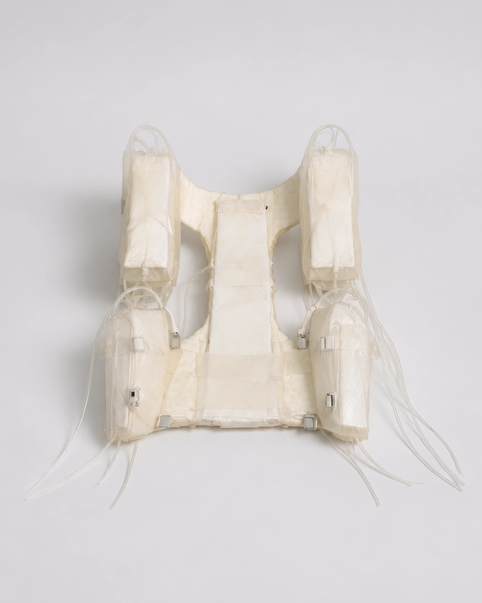
No.01 Variable Assistive Devices
Arm Compression Harness, 2045
바닥 면적이 제한된 초소형 주거 환경에서, 사용자가 공중에
매달린 구조물 위에 몸을 걸치고 생활할 수 있도록 만들어진 장치

No.01 Variable Assistive Devices
바닥 면적이 제한된 초소형 주거 환경에서, 사용자가 공중에
매달린 구조물 위에 몸을 걸치고 생활할 수 있도록 만들어진 장치

No.02 Variable Assistive Devices
협소한 주거 환경에서도 개인의 소지품과 취미 물품을
포기하지 않기 위해 개발된 착용형 수납 장치
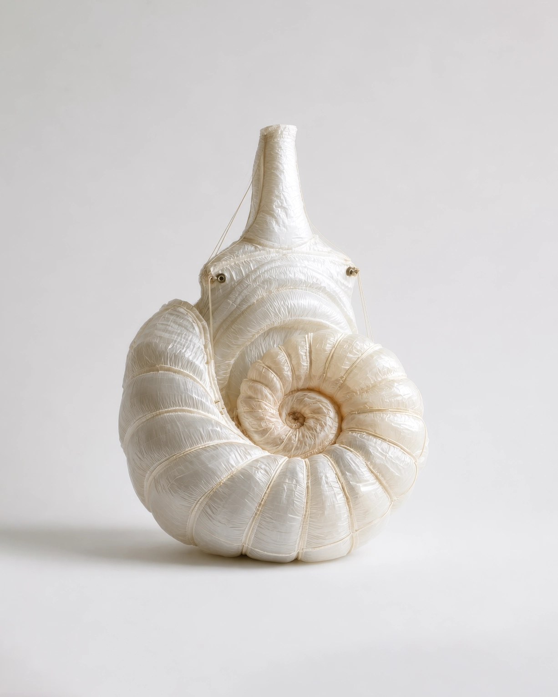
No.03 Adaptive Device
사용자의 신체를 C자 형태로 압축하여 최소한의 부피로
장시간 휴식을 유지하도록 개발된 전신 휴식 구조체

No.04 Variable Assistive Devices
협소한 주거 환경에서 개인의 수집품과 애장품을 보관하고
감상하기 위해 개발된 신체 가변 보조 기구

No.05 Adaptive Device
압축된 생활 자세를 안정적으로 유지하기 위해 개발된 신체 적응 장치

No.06 Variable Assistive Devices
좁은 주거 환경에서 서랍장과 수납장을 줄이기 위해 제작된 착용형 생활 보급 장치
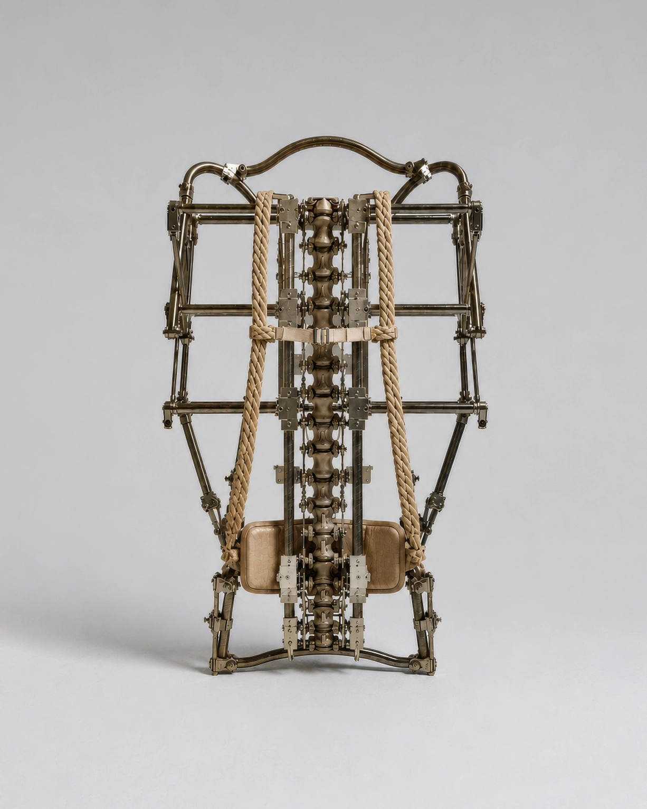
No.07 Variable Assistive Devices
척추와 견갑골을 일시적으로 신전시켜 등의 면적을 넓히고,
신체 자체를 세탁물 건조대로 전환하는 장치
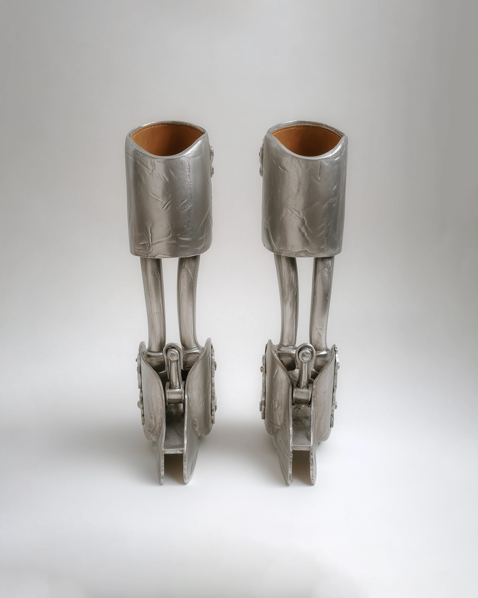
No.08 Variable Assistive Devices
별도의 책상이나 협탁 없이도 다양한 생활 활동을
수행하기 위해 개발된 신체 가변 보조 기구

No.09 Adaptive Device
식사 공간을 신체 앞으로 이동시키기 위해 개발된 착용형 장치
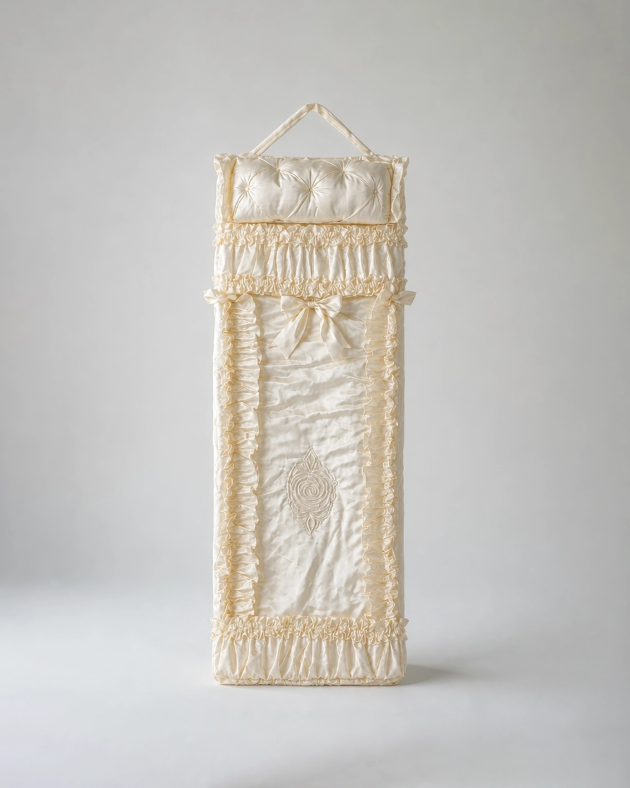
No.10 Adaptive Device
벽면을 수면 공간으로 전환하기 위해 개발된 현수형 수면 장치
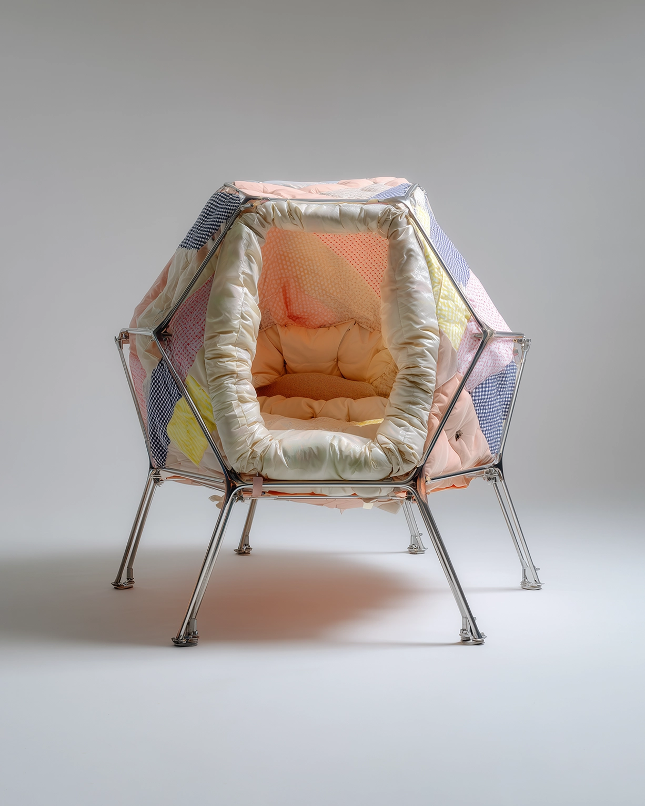
No.11 Adaptive Device
최소한의 면적으로 휴식을 취하기 위한 장치

No.12 Variable Assistive Devices
두 명의 사용자가 하나의 수면 공간을 공유하기 위해 개발된 신체 가변 보조 기구
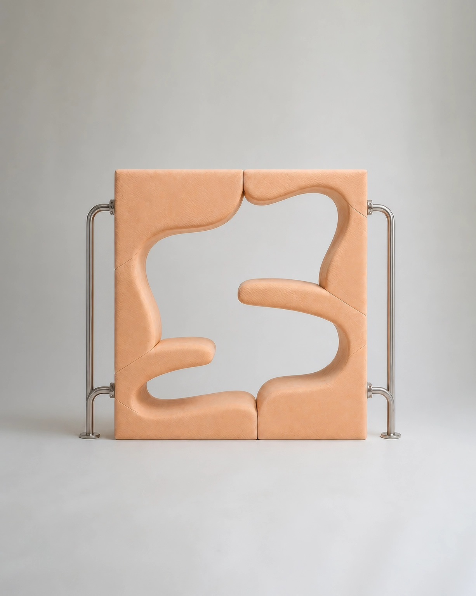
No.13 Variable Assistive Devices
초소형 주거 환경에서 두 명의 사용자가 하나의 수면 공간을
공유하기 위해 개발된 신체 가변 보조 기구

No.14 Variable Assistive Devices
웅크린 생활 자세를 유지하기 위해 개발된 복합 휴식 장치
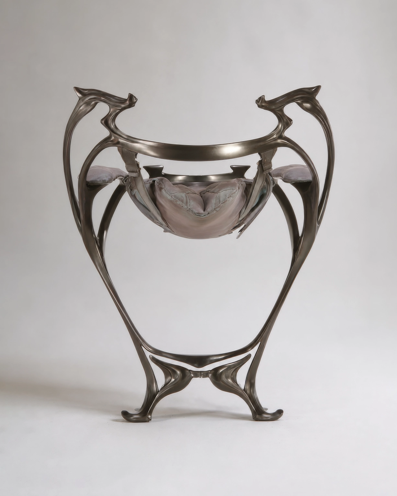
No.15 Adaptive Device
협소한 주거 환경에서 생활하는 사용자의 시선과 자세를 공간에 맞게
재구성하기 위해 개발된 신체 적응 장치

No.16 Variable Assistive Devices
의자를 대체하기 위해 개발된 신체 가변 보조 기구

No.17 Adaptive Device
사용자의 신체를 압축된 자세로 감싸 어디서든 짧은 휴식과
수면을 가능하게 하는 휴대형 장치
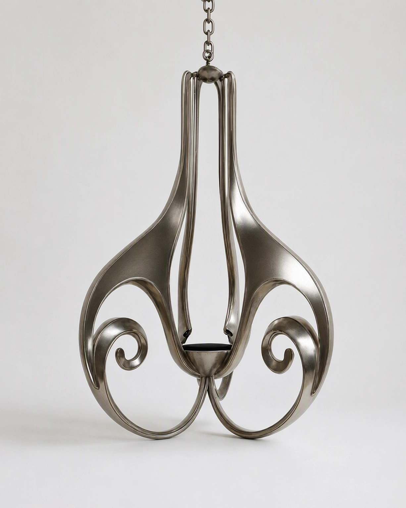
No.18 Adaptive Device
하나의 생활 공간을 여러 용도로 전환하는 장치
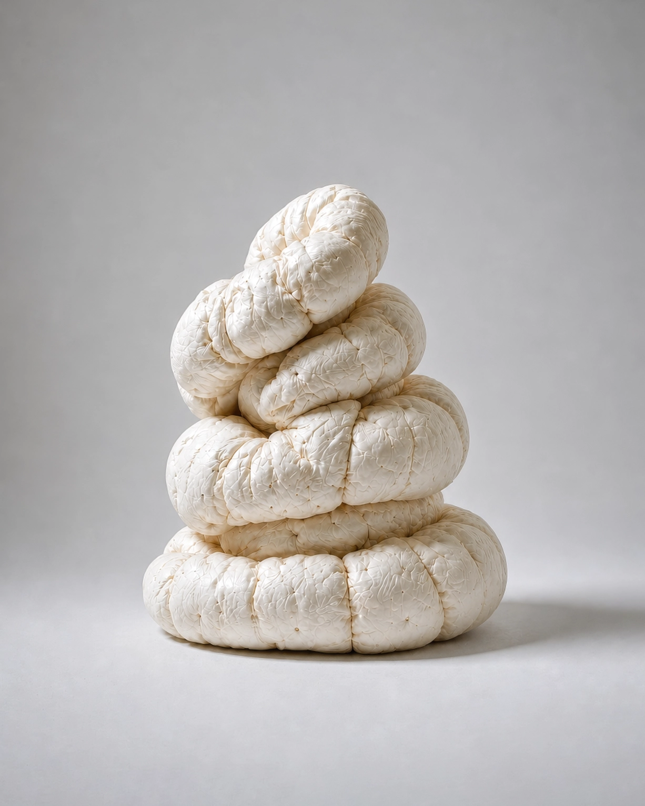
No.19 Adaptive Device
최소한의 면적으로 수면을 유지하기 위해 개발된 나선형 신체 적응 장치
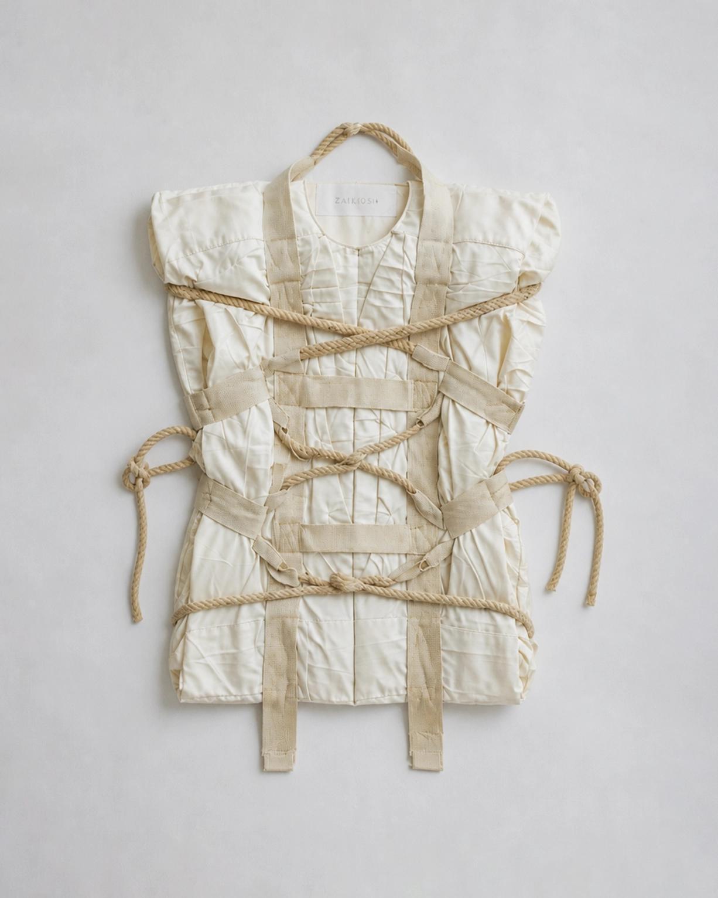
No.20 Variable Assistive Devices
양쪽 어깨를 안쪽으로 압박하여 상체의 폭을 감소시키고,
좁은 공간에서도 효율적으로 생활할 수 있도록 개발된 착용형 신체 가변 장치
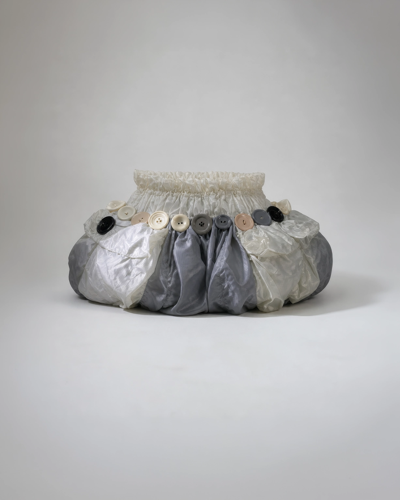
No.21 Variable Assistive Devices
다양한 의류를 보관하기 위해 개발된 착용형 수납 장치
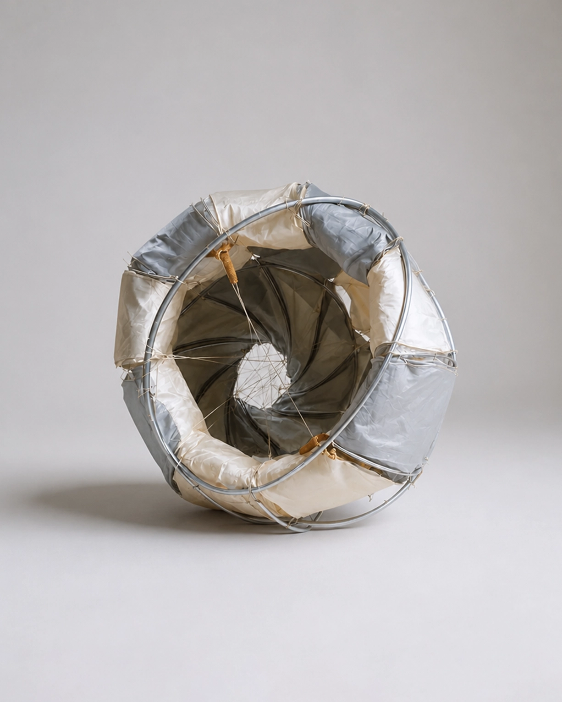
No.22 Adaptive Device
나선형 내부 구조를 따라 사용자의 신체를 단계적으로 굴곡시키며,
척추와 골반, 무릎을 하나의 곡선으로 유도하는 장치

No.23 Adaptive Device
사용자의 휴식 공간을 최소한의 크기로 압축하고,
절약된 부피를 개인 물품을 위한 수납 공간으로 전환한 기구
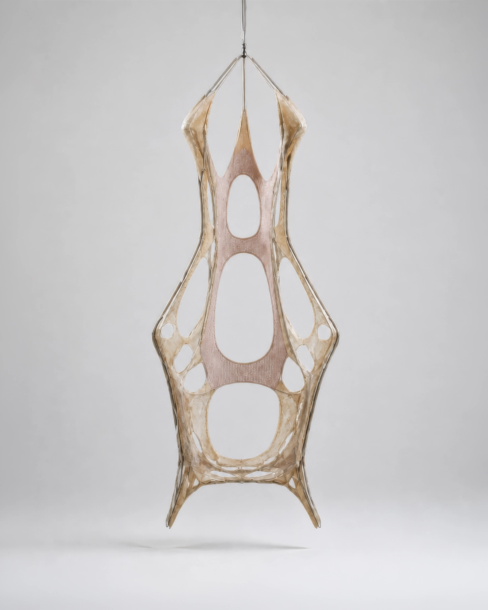
No.24 Adaptive Device
벽면을 새로운 거주 공간으로 전환하기 위한 장치